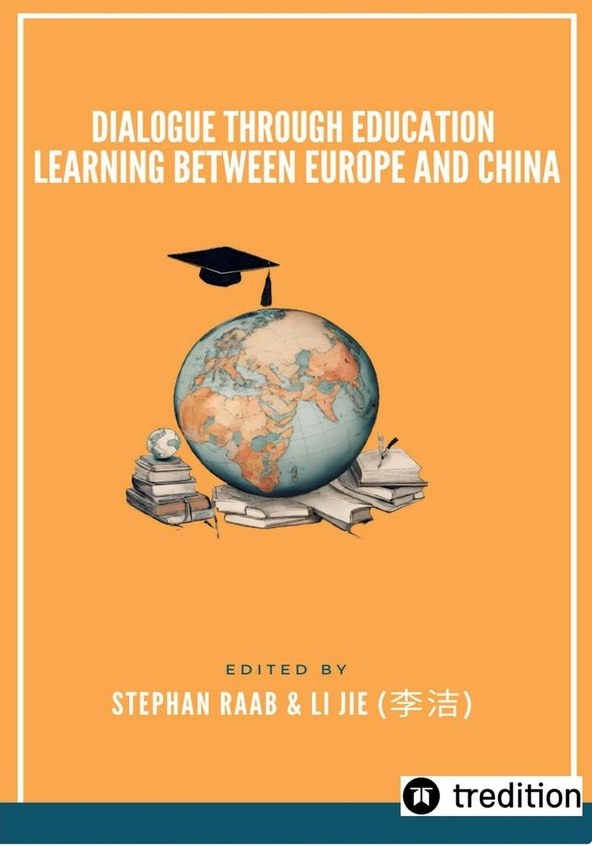

In S. Raab & J. Li (Eds.), Dialogue through Education: Learning between Europe and China (pp. 70–75). tredition GmbH. ISBN 978-3-384-09989-1.
Designing for a globalized world: Lifelong learning and interdisciplinary collaboration in industrial design education.
About the volume


This volume brings together contributions to an academic project from authors with diverse interdisciplinary and intercultural backgrounds across Europe and China.
The project was a collaboration between the Institute for Greater Europe and European Guanxi, two youth-led think tanks involving young academics and professionals from Europe and beyond.
The Institute for Greater Europe focuses on the role of the European Idea within Europe and beyond. European Guanxi works to promote mutual understanding between Europe and China.
Danping Wang contributed the chapter Designing for a globalized world: Lifelong learning and interdisciplinary collaboration in industrial design education (pp. 70–75).